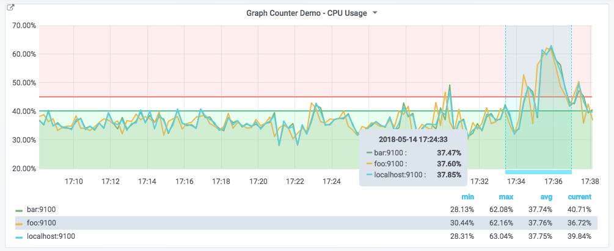
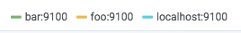
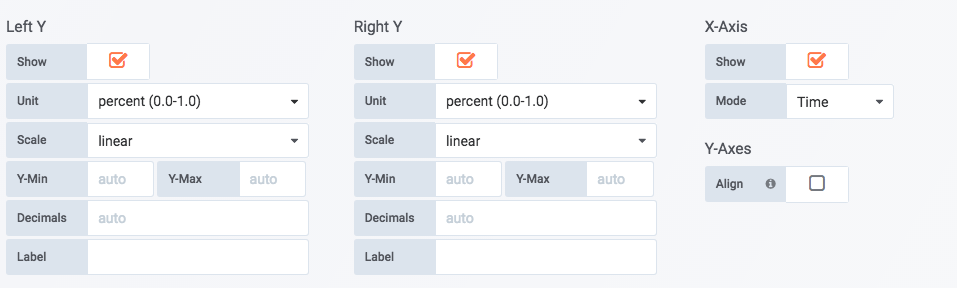
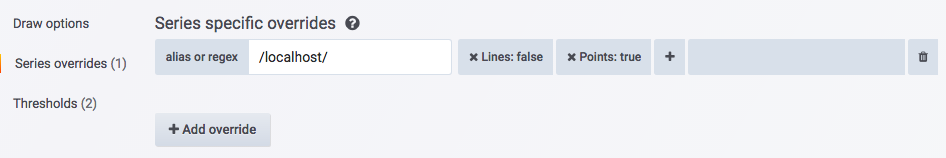
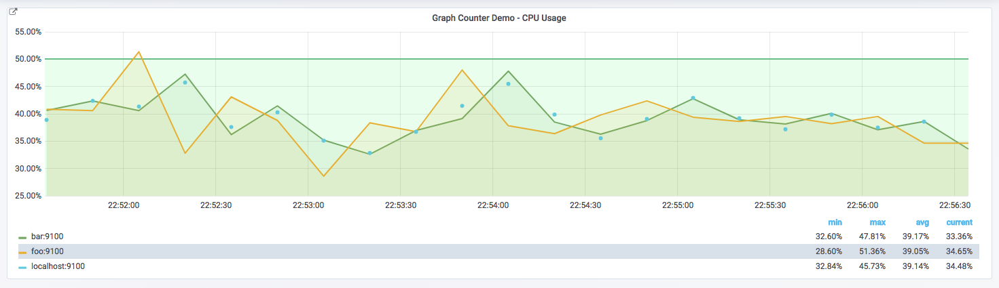
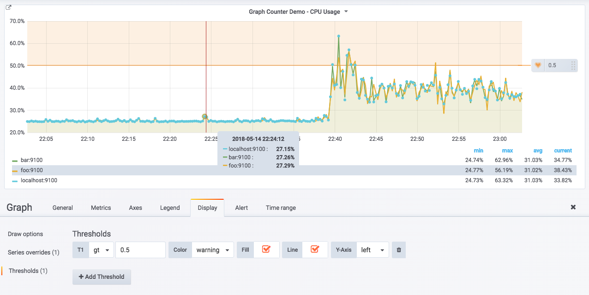
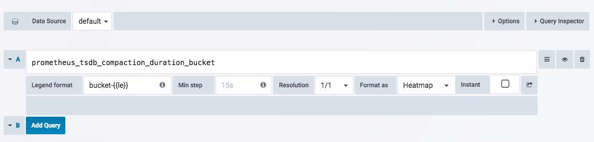
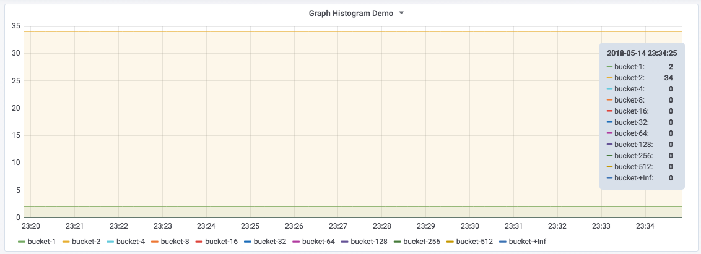

<!doctype html>
<html lang="en" class="no-js">
  <head>
    
      <meta charset="utf-8">
      <meta name="viewport" content="width=device-width,initial-scale=1">
      
      
      
      
      
      <link rel="icon" href="../../assets/favicon.png">
      <meta name="generator" content="mkdocs-1.4.2, mkdocs-material-9.0.15">
    
    
      
        <title>变化趋势：Graph面板 - Prometheus Learning Path</title>
      
    
    
      <link rel="stylesheet" href="../../assets/stylesheets/main.113286f1.min.css">
      
        
        <link rel="stylesheet" href="../../assets/stylesheets/palette.a0c5b2b5.min.css">
      
      

    
    
    
      
        
        
        <link rel="preconnect" href="https://fonts.gstatic.com" crossorigin>
        <link rel="stylesheet" href="https://fonts.googleapis.com/css?family=Roboto:300,300i,400,400i,700,700i%7CRoboto+Mono:400,400i,700,700i&display=fallback">
        <style>:root{--md-text-font:"Roboto";--md-code-font:"Roboto Mono"}</style>
      
    
    
    <script>__md_scope=new URL("../..",location),__md_hash=e=>[...e].reduce((e,_)=>(e<<5)-e+_.charCodeAt(0),0),__md_get=(e,_=localStorage,t=__md_scope)=>JSON.parse(_.getItem(t.pathname+"."+e)),__md_set=(e,_,t=localStorage,a=__md_scope)=>{try{t.setItem(a.pathname+"."+e,JSON.stringify(_))}catch(e){}}</script>
    
      

    
    
    
  </head>
  
  
    
    
    
    
    
    <body dir="ltr" data-md-color-scheme="default" data-md-color-primary="indigo" data-md-color-accent="">
  
    
    
    <input class="md-toggle" data-md-toggle="drawer" type="checkbox" id="__drawer" autocomplete="off">
    <input class="md-toggle" data-md-toggle="search" type="checkbox" id="__search" autocomplete="off">
    <label class="md-overlay" for="__drawer"></label>
    <div data-md-component="skip">
      
        
        <a href="#graph" class="md-skip">
          Skip to content
        </a>
      
    </div>
    <div data-md-component="announce">
      
    </div>
    
    
      

<header class="md-header" data-md-component="header">
  <nav class="md-header__inner md-grid" aria-label="Header">
    <a href="../.." title="Prometheus Learning Path" class="md-header__button md-logo" aria-label="Prometheus Learning Path" data-md-component="logo">
      
  

    </a>
    <label class="md-header__button md-icon" for="__drawer">
      <svg xmlns="http://www.w3.org/2000/svg" viewBox="0 0 24 24"><path d="M3 6h18v2H3V6m0 5h18v2H3v-2m0 5h18v2H3v-2Z"/></svg>
    </label>
    <div class="md-header__title" data-md-component="header-title">
      <div class="md-header__ellipsis">
        <div class="md-header__topic">
          <span class="md-ellipsis">
            Prometheus Learning Path
          </span>
        </div>
        <div class="md-header__topic" data-md-component="header-topic">
          <span class="md-ellipsis">
            
              变化趋势：Graph面板
            
          </span>
        </div>
      </div>
    </div>
    
    
    
      <label class="md-header__button md-icon" for="__search">
        <svg xmlns="http://www.w3.org/2000/svg" viewBox="0 0 24 24"><path d="M9.5 3A6.5 6.5 0 0 1 16 9.5c0 1.61-.59 3.09-1.56 4.23l.27.27h.79l5 5-1.5 1.5-5-5v-.79l-.27-.27A6.516 6.516 0 0 1 9.5 16 6.5 6.5 0 0 1 3 9.5 6.5 6.5 0 0 1 9.5 3m0 2C7 5 5 7 5 9.5S7 14 9.5 14 14 12 14 9.5 12 5 9.5 5Z"/></svg>
      </label>
      <div class="md-search" data-md-component="search" role="dialog">
  <label class="md-search__overlay" for="__search"></label>
  <div class="md-search__inner" role="search">
    <form class="md-search__form" name="search">
      <input type="text" class="md-search__input" name="query" aria-label="Search" placeholder="Search" autocapitalize="off" autocorrect="off" autocomplete="off" spellcheck="false" data-md-component="search-query" required>
      <label class="md-search__icon md-icon" for="__search">
        <svg xmlns="http://www.w3.org/2000/svg" viewBox="0 0 24 24"><path d="M9.5 3A6.5 6.5 0 0 1 16 9.5c0 1.61-.59 3.09-1.56 4.23l.27.27h.79l5 5-1.5 1.5-5-5v-.79l-.27-.27A6.516 6.516 0 0 1 9.5 16 6.5 6.5 0 0 1 3 9.5 6.5 6.5 0 0 1 9.5 3m0 2C7 5 5 7 5 9.5S7 14 9.5 14 14 12 14 9.5 12 5 9.5 5Z"/></svg>
        <svg xmlns="http://www.w3.org/2000/svg" viewBox="0 0 24 24"><path d="M20 11v2H8l5.5 5.5-1.42 1.42L4.16 12l7.92-7.92L13.5 5.5 8 11h12Z"/></svg>
      </label>
      <nav class="md-search__options" aria-label="Search">
        
        <button type="reset" class="md-search__icon md-icon" title="Clear" aria-label="Clear" tabindex="-1">
          <svg xmlns="http://www.w3.org/2000/svg" viewBox="0 0 24 24"><path d="M19 6.41 17.59 5 12 10.59 6.41 5 5 6.41 10.59 12 5 17.59 6.41 19 12 13.41 17.59 19 19 17.59 13.41 12 19 6.41Z"/></svg>
        </button>
      </nav>
      
    </form>
    <div class="md-search__output">
      <div class="md-search__scrollwrap" data-md-scrollfix>
        <div class="md-search-result" data-md-component="search-result">
          <div class="md-search-result__meta">
            Initializing search
          </div>
          <ol class="md-search-result__list" role="presentation"></ol>
        </div>
      </div>
    </div>
  </div>
</div>
    
    
  </nav>
  
</header>
    
    <div class="md-container" data-md-component="container">
      
      
        
          
        
      
      <main class="md-main" data-md-component="main">
        <div class="md-main__inner md-grid">
          
            
              
              <div class="md-sidebar md-sidebar--primary" data-md-component="sidebar" data-md-type="navigation" >
                <div class="md-sidebar__scrollwrap">
                  <div class="md-sidebar__inner">
                    


<nav class="md-nav md-nav--primary" aria-label="Navigation" data-md-level="0">
  <label class="md-nav__title" for="__drawer">
    <a href="../.." title="Prometheus Learning Path" class="md-nav__button md-logo" aria-label="Prometheus Learning Path" data-md-component="logo">
      
  

    </a>
    Prometheus Learning Path
  </label>
  
  <ul class="md-nav__list" data-md-scrollfix>
    
      
      
      

  
  
  
    <li class="md-nav__item">
      <a href="../../catalogue/" class="md-nav__link">
        目录
      </a>
    </li>
  

    
      
      
      

  
  
  
    
    <li class="md-nav__item md-nav__item--nested">
      
      
      
      
      <input class="md-nav__toggle md-toggle " type="checkbox" id="__nav_2" >
      
      
      
        <label class="md-nav__link" for="__nav_2" id="__nav_2_label" tabindex="0">
          第1章 天降奇兵
          <span class="md-nav__icon md-icon"></span>
        </label>
      
      <nav class="md-nav" data-md-level="1" aria-labelledby="__nav_2_label" aria-expanded="false">
        <label class="md-nav__title" for="__nav_2">
          <span class="md-nav__icon md-icon"></span>
          第1章 天降奇兵
        </label>
        <ul class="md-nav__list" data-md-scrollfix>
          
            
              
  
  
  
    <li class="md-nav__item">
      <a href="../../quickstart/why-monitor/" class="md-nav__link">
        Prometheus简介
      </a>
    </li>
  

            
          
            
              
  
  
  
    <li class="md-nav__item">
      <a href="../../quickstart/prometheus-quick-start/" class="md-nav__link">
        初识Prometheus
      </a>
    </li>
  

            
          
            
              
  
  
  
    <li class="md-nav__item">
      <a href="../../quickstart/install-prometheus-server/" class="md-nav__link">
        安装Prometheus
      </a>
    </li>
  

            
          
            
              
  
  
  
    <li class="md-nav__item">
      <a href="../../quickstart/use-node-exporter/" class="md-nav__link">
        使用Node Exporter采集主机数据
      </a>
    </li>
  

            
          
            
              
  
  
  
    <li class="md-nav__item">
      <a href="../../quickstart/promql_quickstart/" class="md-nav__link">
        使用PromQL查询监控数据
      </a>
    </li>
  

            
          
            
              
  
  
  
    <li class="md-nav__item">
      <a href="../../quickstart/use-grafana-create-dashboard" class="md-nav__link">
        监控数据可视化
      </a>
    </li>
  

            
          
            
              
  
  
  
    <li class="md-nav__item">
      <a href="../../quickstart/prometheus-job-and-instance/" class="md-nav__link">
        任务和实例
      </a>
    </li>
  

            
          
            
              
  
  
  
    <li class="md-nav__item">
      <a href="../../quickstart/prometheus-arch/" class="md-nav__link">
        Prometheus核心组件
      </a>
    </li>
  

            
          
            
              
  
  
  
    <li class="md-nav__item">
      <a href="../../quickstart/SUMMARY/" class="md-nav__link">
        小结
      </a>
    </li>
  

            
          
        </ul>
      </nav>
    </li>
  

    
      
      
      

  
  
  
    
    <li class="md-nav__item md-nav__item--nested">
      
      
      
      
      <input class="md-nav__toggle md-toggle " type="checkbox" id="__nav_3" >
      
      
      
        <label class="md-nav__link" for="__nav_3" id="__nav_3_label" tabindex="0">
          第二章 探索PromQL
          <span class="md-nav__icon md-icon"></span>
        </label>
      
      <nav class="md-nav" data-md-level="1" aria-labelledby="__nav_3_label" aria-expanded="false">
        <label class="md-nav__title" for="__nav_3">
          <span class="md-nav__icon md-icon"></span>
          第二章 探索PromQL
        </label>
        <ul class="md-nav__list" data-md-scrollfix>
          
            
              
  
  
  
    <li class="md-nav__item">
      <a href="../../promql/what-is-prometheus-metrics-and-labels/" class="md-nav__link">
        理解时间序列
      </a>
    </li>
  

            
          
        </ul>
      </nav>
    </li>
  

    
      
      
      

  
  
  
    
    <li class="md-nav__item md-nav__item--nested">
      
      
      
      
      <input class="md-nav__toggle md-toggle " type="checkbox" id="__nav_4" >
      
      
      
        <label class="md-nav__link" for="__nav_4" id="__nav_4_label" tabindex="0">
          第3章 Prometheus告警处理
          <span class="md-nav__icon md-icon"></span>
        </label>
      
      <nav class="md-nav" data-md-level="1" aria-labelledby="__nav_4_label" aria-expanded="false">
        <label class="md-nav__title" for="__nav_4">
          <span class="md-nav__icon md-icon"></span>
          第3章 Prometheus告警处理
        </label>
        <ul class="md-nav__list" data-md-scrollfix>
          
            
              
  
  
  
    <li class="md-nav__item">
      <a href="../../alert/prometheus-alert-manager-overview/" class="md-nav__link">
        Prometheus告警简介
      </a>
    </li>
  

            
          
        </ul>
      </nav>
    </li>
  

    
      
      
      

  
  
  
    
    <li class="md-nav__item md-nav__item--nested">
      
      
      
      
      <input class="md-nav__toggle md-toggle " type="checkbox" id="__nav_5" >
      
      
      
        <label class="md-nav__link" for="__nav_5" id="__nav_5_label" tabindex="0">
          第4章 Exporter详解
          <span class="md-nav__icon md-icon"></span>
        </label>
      
      <nav class="md-nav" data-md-level="1" aria-labelledby="__nav_5_label" aria-expanded="false">
        <label class="md-nav__title" for="__nav_5">
          <span class="md-nav__icon md-icon"></span>
          第4章 Exporter详解
        </label>
        <ul class="md-nav__list" data-md-scrollfix>
          
            
              
  
  
  
    <li class="md-nav__item">
      <a href="../../exporter/what-is-prometheus-exporter/" class="md-nav__link">
        Exporter是什么
      </a>
    </li>
  

            
          
        </ul>
      </nav>
    </li>
  

    
  </ul>
</nav>
                  </div>
                </div>
              </div>
            
            
              
              <div class="md-sidebar md-sidebar--secondary" data-md-component="sidebar" data-md-type="toc" >
                <div class="md-sidebar__scrollwrap">
                  <div class="md-sidebar__inner">
                    

<nav class="md-nav md-nav--secondary" aria-label="Table of contents">
  
  
  
    
  
  
    <label class="md-nav__title" for="__toc">
      <span class="md-nav__icon md-icon"></span>
      Table of contents
    </label>
    <ul class="md-nav__list" data-md-component="toc" data-md-scrollfix>
      
        <li class="md-nav__item">
  <a href="#graphprometheus" class="md-nav__link">
    Graph面板与Prometheus
  </a>
  
    <nav class="md-nav" aria-label="Graph面板与Prometheus">
      <ul class="md-nav__list">
        
          <li class="md-nav__item">
  <a href="#graphcountergauge" class="md-nav__link">
    使用Graph面板可视化Counter/Gauge
  </a>
  
</li>
        
          <li class="md-nav__item">
  <a href="#graphhistogram" class="md-nav__link">
    使用Graph面板可视化Histogram
  </a>
  
</li>
        
      </ul>
    </nav>
  
</li>
      
    </ul>
  
</nav>
                  </div>
                </div>
              </div>
            
          
          
            <div class="md-content" data-md-component="content">
              <article class="md-content__inner md-typeset">
                
                  


<h1 id="graph">变化趋势：Graph面板</h1>
<p>Graph面板是最常用的一种可视化面板，其通过折线图或者柱状图的形式显示监控样本随时间而变化的趋势。Graph面板天生适用于Prometheus中Gauge和Counter类型监控指标的监控数据可视化。例如，当需要查看主机CPU、内存使用率的随时间变化的情况时，可以使用Graph面板。同时，Graph还可以非常方便的支持多个数据之间的对比。</p>
<p></p>
<h2 id="graphprometheus">Graph面板与Prometheus</h2>
<p>Graph面板通过折线图或者柱状图的形式，能够展示监控样本数据在一段时间内的变化趋势，因此其天生适合Prometheus中的Counter和Gauge类型的监控指标的可视化，对于Histogram类型的指标也可以支持，不过可视化效果不如Heatmap Panel来的直观。</p>
<h3 id="graphcountergauge">使用Graph面板可视化Counter/Gauge</h3>
<p>以主机为例，CPU使用率的变化趋势天然适用于使用Grapn面板来进行展示：</p>
<p></p>
<p>在<strong>Metrics选项</strong>中，我们使用以下PromQL定义如何从Prometheus中读取数据：</p>
<pre><code>1 - (avg(irate(node_cpu{mode='idle'}[5m])) without (cpu))
</code></pre>
<p>如下所示：</p>
<p></p>
<p>根据当前Prometheus的数据采集情况，该PromQL会返回多条时间序列（在示例中会返回3条）。Graph面板会从时间序列中获取样本数据，并绘制到图表中。 为了让折线图有更好的可读性，我们可以通过定义<strong>Legend format</strong>为<code>{{ instance }}</code>控制每条线的图例名称：</p>
<p></p>
<p>由于当前使用的PromQL的数据范围为0~1表示CPU的使用率，为了能够更有效的表达出度量单位的概念，我们需要对Graph图表的坐标轴显示进行优化。如下所示，在<strong>Axes选项</strong>中可以控制图标的X轴和Y轴相关的行为：</p>
<p></p>
<p>默认情况下，Y轴会直接显示当前样本的值，通过<strong>Left Y</strong>的<strong>Unit</strong>可以让Graph面板自动格式化样本值。当前表达式返回的当前主机CPU使用率的小数表示，因此，这里选择单位为<strong>percent(0.0.-1.0)</strong>。除了百分比以外，Graph面板支持如日期、货币、重量、面积等各种类型单位的自动换算，用户根据自己当前样本的值含义选择即可。</p>
<p>除了在Metrics设置图例的显示名称以外，在Graph面板的<strong>Legend选项</strong>可以进一步控制图例的显示方式，如下所示：</p>
<p></p>
<p><strong>Options中</strong>可以设置图例的显示方式以及展示位置，<strong>Values</strong>中可以设置是否显示当前时间序列的最小值，平均值等。 <strong>Decimals</strong>用于配置这些值显示时保留的小数位，如下所示：</p>
<p></p>
<p>除了以上设置以外，我们可能还需要对图表进行一些更高级的定制化，以便能够更直观的从可视化图表中获取信息。在Graph面板中<strong>Display选项</strong>可以帮助我们实现更多的可视化定制的能力，其中包含三个部分：Draw options、Series overrides和Thresholds。</p>
<p></p>
<p><strong>Draw Options</strong>用于设置当前图标的展示形式、样式以及交互提示行为。其中，Draw Modes用于控制图形展示形式：Bar（柱状）、Lines（线条）、Points（点），用户可以根据自己的需求同时启用多种模式。Mode Options则设置各个展示模式下的相关样式。Hover tooltip用于控制当鼠标移动到图形时，显示提示框中的内容。</p>
<p>如果希望当前图表中的时间序列以不同的形式展示，则可以通过<strong>Series overrides</strong>控制，顾名思义，可以为指定的时间序列指定自定义的Draw Options配置，从而让其以不同的样式展示。例如：</p>
<p></p>
<p>这里定义了一条自定义规则，其匹配图例名称满足<strong>/localhost/</strong>的时间序列，并定义其以点的形式显示在图表中，修改后的图标显示效果如下：</p>
<p></p>
<p>Display选项中的最后一个是<strong>Thresholds</strong>，Threshold主要用于一些自定义一些样本的阈值，例如，定义一个Threshold规则，如果CPU超过50%的区域显示为warning状态，可以添加如下配置：</p>
<p></p>
<p>Graph面板则会在图表中显示一条阈值，并且将所有高于该阈值的区域显示为warining状态，通过可视化的方式直观的在图表中显示一些可能出现异常的区域。</p>
<p>需要注意的是，如果用户为该图表自定义了Alert（告警）配置，Thresholds将会被警用，并且根据Alert中定义的Threshold在图形中显示阈值内容。关于Alert的使用会在后续部分，详细介绍。</p>
<h3 id="graphhistogram">使用Graph面板可视化Histogram</h3>
<p>以Prometheus自身的监控指标prometheus_tsdb_compaction_duration为例，该监控指标记录了Prometheus进行数据压缩任务的运行耗时的分布统计情况。如下所示，是Prometheus返回的样本数据：</p>
<pre><code># HELP prometheus_tsdb_compaction_duration Duration of compaction runs.
# TYPE prometheus_tsdb_compaction_duration histogram
prometheus_tsdb_compaction_duration_bucket{le=&quot;1&quot;} 2
prometheus_tsdb_compaction_duration_bucket{le=&quot;2&quot;} 36
prometheus_tsdb_compaction_duration_bucket{le=&quot;4&quot;} 36
prometheus_tsdb_compaction_duration_bucket{le=&quot;8&quot;} 36
prometheus_tsdb_compaction_duration_bucket{le=&quot;16&quot;} 36
prometheus_tsdb_compaction_duration_bucket{le=&quot;32&quot;} 36
prometheus_tsdb_compaction_duration_bucket{le=&quot;64&quot;} 36
prometheus_tsdb_compaction_duration_bucket{le=&quot;128&quot;} 36
prometheus_tsdb_compaction_duration_bucket{le=&quot;256&quot;} 36
prometheus_tsdb_compaction_duration_bucket{le=&quot;512&quot;} 36
prometheus_tsdb_compaction_duration_bucket{le=&quot;+Inf&quot;} 36
prometheus_tsdb_compaction_duration_sum 51.31017077500001
prometheus_tsdb_compaction_duration_count 36
</code></pre>
<p>在第2章的“Metric类型”小节中，我们已经介绍过Histogram的指标，Histogram用于统计样本数据的分布情况，其中标签le定义了分布桶Bucket的边界，如上所示，表示当前Prometheus共进行了36次数据压缩，总耗时为51.31017077500001ms。其中任务耗时在0~1ms区间内的为2次、在0~2ms区间范围内为36次，以此类推。</p>
<p>如下所示，如果需要在Graph中显示Histogram类型的监控指标，需要在Query Editor中定义查询结果的<strong>Format as</strong>为Heatmap。通过该设置Grafana会自动计算Histogram中的Bucket边界范围以及该范围内的值：</p>
<p></p>
<p>Graph面板重新计算了Bucket边界，如下所示，在0~1ms范围内的任务次数为2，在1~2ms范围内的运行任务次数为34。通过图形的面积，可以反映出各个Bucket下的大致数据分布情况：</p>
<p></p>
<p>不过通过Graph面板展示Histogram也并不太直观，其并不能直接反映出Bucket的大小以及分布情况，因此在Grafana V5版本以后更推荐使用Heatmap面板的方式展示Histogram样本数据。关于Heatmap面板的使用将会在接下来的部分介绍。</p>


                
              </article>
            </div>
          
          
        </div>
        
      </main>
      
        <footer class="md-footer">
  
  <div class="md-footer-meta md-typeset">
    <div class="md-footer-meta__inner md-grid">
      <div class="md-copyright">
  
  
    Made with
    <a href="https://squidfunk.github.io/mkdocs-material/" target="_blank" rel="noopener">
      Material for MkDocs
    </a>
  
</div>
      
    </div>
  </div>
</footer>
      
    </div>
    <div class="md-dialog" data-md-component="dialog">
      <div class="md-dialog__inner md-typeset"></div>
    </div>
    
    <script id="__config" type="application/json">{"base": "../..", "features": [], "search": "../../assets/javascripts/workers/search.208ed371.min.js", "translations": {"clipboard.copied": "Copied to clipboard", "clipboard.copy": "Copy to clipboard", "search.result.more.one": "1 more on this page", "search.result.more.other": "# more on this page", "search.result.none": "No matching documents", "search.result.one": "1 matching document", "search.result.other": "# matching documents", "search.result.placeholder": "Type to start searching", "search.result.term.missing": "Missing", "select.version": "Select version"}}</script>
    
    
      <script src="../../assets/javascripts/bundle.2a6f1dda.min.js"></script>
      
    
  </body>
</html>